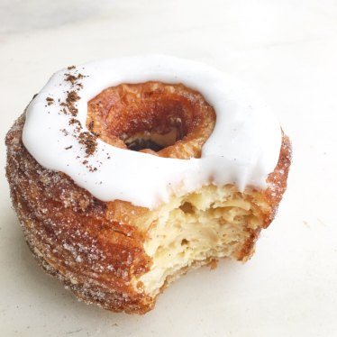

Cronuts

Description
The cronut is a pastry that resembles a doughnut and is made from croissant-like
dough filled with flavored cream and fried in grapeseed oil.
Ingredients
- Bread flour
- Kosher salt
- Granulated sugar
- Instant yeast
- Water, cold
- Egg white
- Unsalted butter
- Heavy cream
Steps
- Make ganache 2 days in advance and refrigerate.
- Make the cronut dough and proof for 2-3 hours.
- Punch down and form into a 10-inch square.
Place on a sheet pan and cover tightly with plastic. Refrigerate overnight.
- Make a 7 inch butter block and refrigerate overnight.
- Set the dough on a floured surface and top with the butter block.
- Fold to seal in the butter.
- Roll into a 20 inch square then fold into a 10 inch square.
- Refrigerate 1 hour then repeat, cover and refrigerate overnight.
- Roll dough and allow to relax before cutting donut shapes.
- Proof until tripled in size, then fry.
- Inject each pastry with ganache. Roll the sides in sugar and top with chocolate glaze.
- Enjoy.